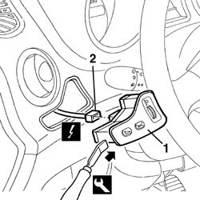
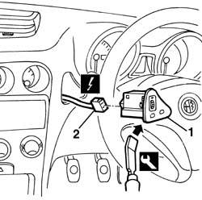

5540C18 headlamp/light cluster alignment correction motor switch - r+r
- Path
- Procedures > 55 ELECTRICAL EQUIPMENT > 5540 EXTERIOR LIGHTING > 5540C headlamp/light cluster alignment correction devices > 5540C18 headlamp/light cluster alignment correction motor switch - r+r
- Kind
- repair procedure (removal / refitting; the operation number is the code)
- Applies to
- all engines; all production periods
- Interactive page
- https://sloeber94.github.io/elrnDB-a156/en/#/3238460
Applies to: all engines; all production periods
 Removing
Removing
 Refitting
Refitting1. Remove the switch using the special tool (work on the side shown).
 | Name | Country |
|---|---|---|
1 | Scraper blade | 1.823.014.000 |
2. Disconnect the electrical connections.
 | Name | Connector |
|---|---|---|
2 | Controls for headlamp alignment, instrument lighting adjustment |

Applies to: all engines; all production periods
Refitting
RemovingCheck that the switch is not damaged and, if necessary, conduct an electrical test on it.
Connect the electrical connection
Fit the switch.
Test the operation of the headlamp alignment.
Applies to: all engines; all production periods; only with equipment: Right hand drive
Removing
Refitting1. Remove the switch using the special tool.
Work on the side shown.
| Name | Country |
|---|---|---|
1 | Scraper blade | 1.823.014.000 |
2. Disconnect the electrical connections.
| Name | Connector |
|---|---|---|
2 | Controls for headlamp alignment, instrument lighting adjustment |

Applies to: all engines; all production periods; only with equipment: Right hand drive
Refitting
RemovingCheck that the switch is not damaged and, if necessary, conduct an electrical test on it.
Connect the electrical connection
Fit the switch.
Test the operation of the headlamp alignment.
Topics linked from this page (1)
Topics that link to this page (21)
- I80 HEADLAMP ALIGNMENT CORRECTOR NOT WORKING
- K06 TRIP METER DOES NOT ZERO
- K07 MILOMETER NOT SWITCHING TO SHOW OUTSIDE TEMPERATURE
- K91 INSTRUMENT LIGHTS / LIGHTING DIMMER NOT WORKING
- 5010B24 under-facia air ducts r r
- 5020A10 heater box - r+r
- 5020L10 additional heater system boiler - r r
- 5040B30 expansion valve (tube orifice) - r+r
- 5040C10 air conditioner box - r+r
- 5040C50 air conditioner heater radiator - r+r
- 5040D52 air inlet and recirculation flap actuator - r r
- 5040D76 air contitioner distribution flap control motor - r r
- 5040D84 air conditioner left hand air mixer flap control motor - r r
- 5040D86 air conditioner right hand air mixer flap control motor - r r
- 5040D90 air conditioner system wiring bundle - r r
- 5505A26 bonnet wiring - r r
- 5505C31 under-facia wiring - r r
- 5505C41 cabin wiring - r r
- 5560B12 instrument lighting dimmer - r+r
- 7040A10 instrument facia trim - r+r
- 7040A97 facia trim support beam - r r